Explore and enjoy a new level of gaming with the powerful Nitro 5. The solid, understated design houses a lightning-quick FHD IPS screen and a lineup of impressive tech that enhances every aspect of gameplay.
POWERED BY:
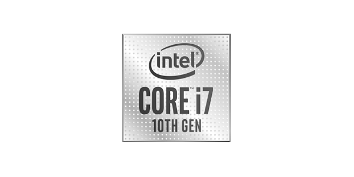
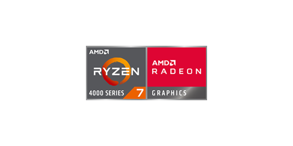
Dominating Specs
Reign over the game world with the combined power of a 10th Gen Intel® Core™ i7 processor1 or AMD Ryzen Series 4000 Mobile processor and NVIDIA® GeForce RTX™ graphics. Configure your laptop for maximum speed and massive storage with two slots for M.2 PCIe SSDs1 and up to 32GB of DDR4 RAM.
RTX ENABLED
Now the new GeForce RTX SUPER ™ Series has even more cores and higher clocks, bringing you performance that’s up to 25% faster than the original RTX 20 Series. It’s time to gear up and get super powers.
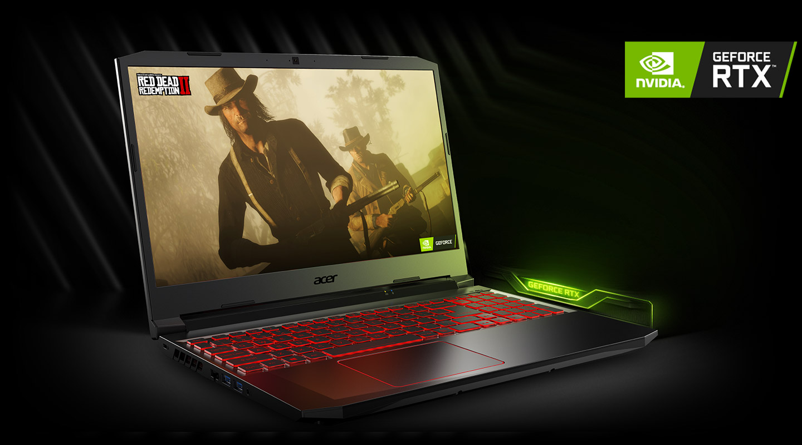
Visual Intensity
Explore games in greater detail with the sharp visuals of a 17.3 or 15.6-inch FHD IPS display. Enjoy smooth, blur-free gameplay with a 144Hz1 refresh rate and a 3ms response time
- FHD IPS 1920x1080
- 15.6 / 17.3
Screen Size
- 144Hz / 3ms
Refresh / Response
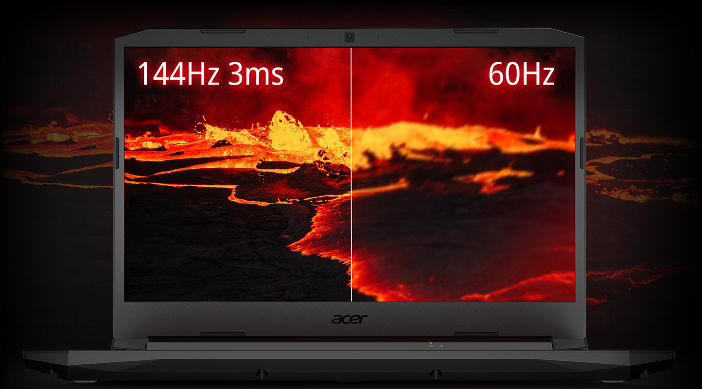
Coolness Under Fire
When heavy use requires an added boost, chill out with twin fans, Acer CoolBoost™ technology and quad exhaust port design. CoolBoost™ increases fan speed by 10% and CPU/GPU cooling by 9% compared to auto mode. Monitor and manage your system in real time with NitroSense, covering temperatures, fan speeds and more.
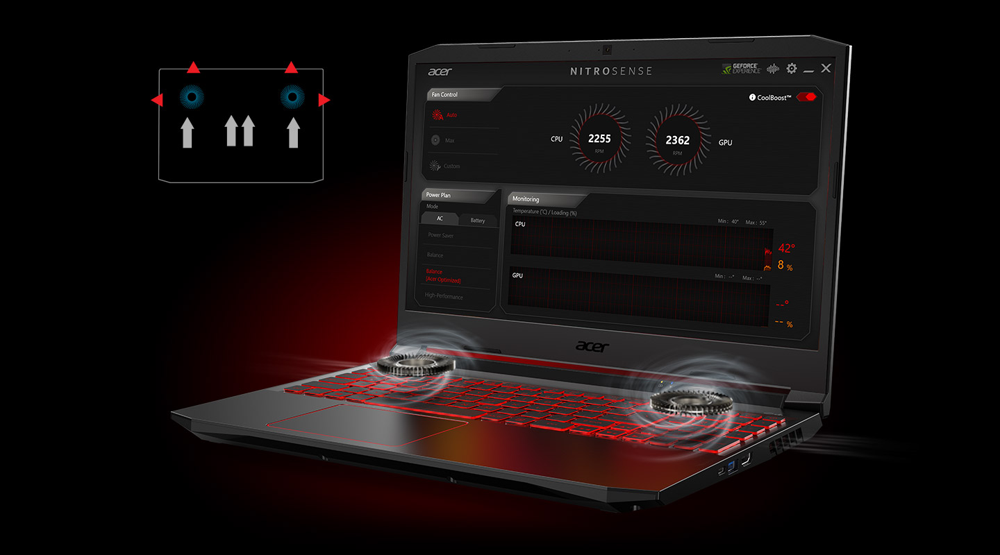
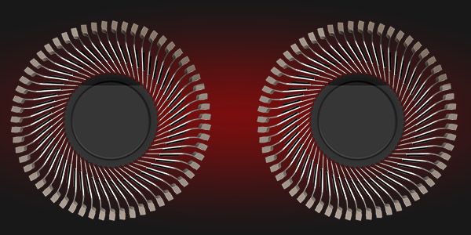
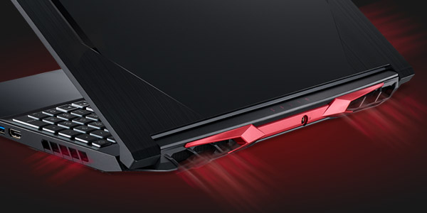
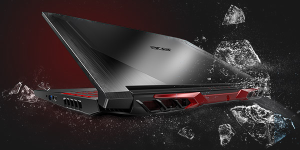
Dual-fan Cooling
Quad-Exhaust
Cool Boost
KEYBOARD
Spice things up with the 4-zone RGB keyboard1 and take command of the inner workings of the laptop
via the dedicated NitroSense Key. The WASD and arrow keys are also highlighted for easy visibility while
the key response itself is immediate with a mere 1.6mm travel distance.
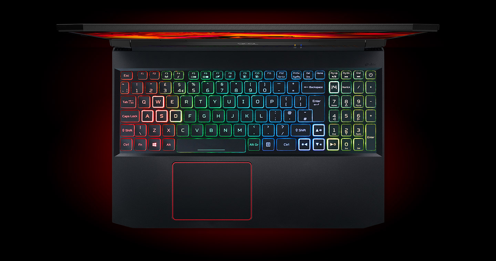
Sound System
Better audio delivers a competitive edge as well as a more immersive experience through dual 2W speakers. With DTS:X® Ultra, sounds are clear and can be delivered in a 3D spatial soundscape,,allowing you to hear where your opponents are coming from with pinpoint precision.
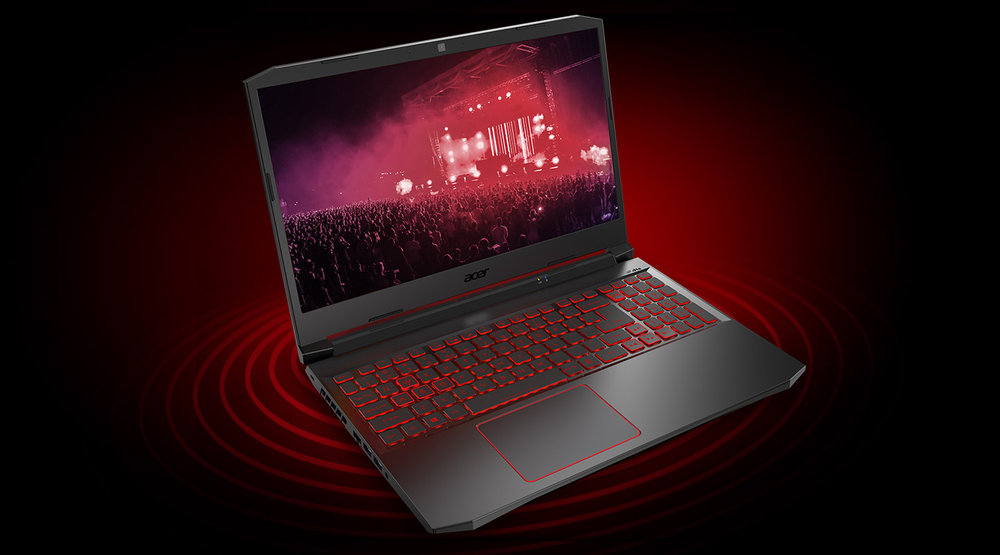
Ports Availability
Plug all your peripherals into the full range of ports
including HDMI 2.0 and the newest USB 3.2 standard with Gen1 and 2 support.
HDMI 2.0
USB 3.2
USB 3.2
Type-A
USB 3.2
Type-C
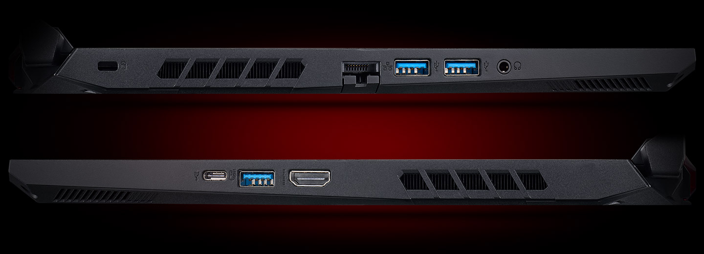
View Models